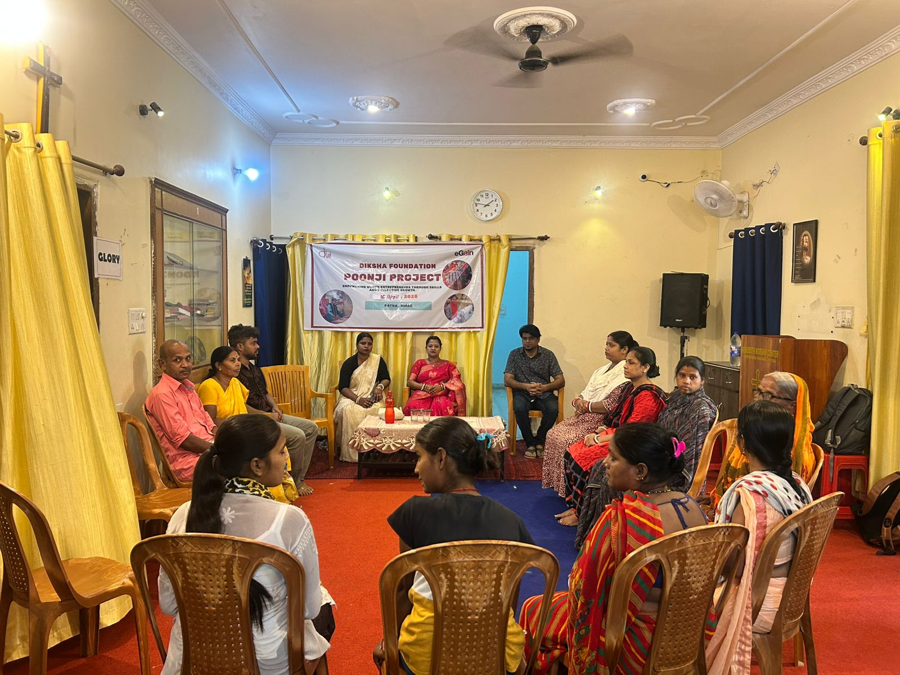
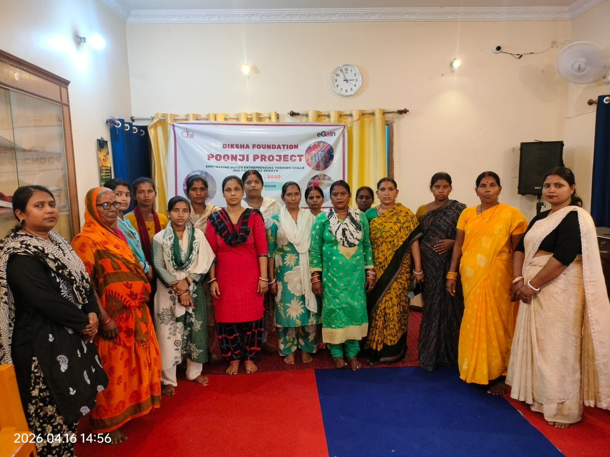

Sitting together at home
The team asks what the participant hopes to do before discussing equipment or money. A household visit gives her time to explain the situation in her own words.
Patna · Women and livelihoods · Since 2021
Poonji grew from conversations with women whose household incomes were under pressure during Covid. Some were already running small shops or selling vegetables. Others wanted to learn tailoring or beauty work.
Today, we visit each participant at home. She tells us what she wants to do and what is getting in the way. The support is chosen with her, and our team returns to see how the work is going.
What happens after the first visit
From the first visit onwards
The participant talks about the work she already knows and how it fits into her day. A facilitator also asks about the people she sells to and the difficulty she wants to solve.
The team asks what the participant hopes to do before discussing equipment or money. A household visit gives her time to explain the situation in her own words.
The woman names the item that would help. Poonji has provided equipment and material for small shops. Earlier groups also used small grants and credit through their own bank accounts.
Group meetings give women time to bring questions from the week’s work. They talk about what to charge, when to buy more stock and how much they have been able to save.
The team returns to see how the equipment is being used. When a problem appears, the woman and facilitator talk through what can be done next.

From Haj Bhawan
Samanti Devi is 59 and lives in Haj Bhawan. Since her husband’s death, the small shop she runs has been an important source of income for her.
When our team visited, Samanti Devi knew what would make the shop more useful. With a refrigerator, she could keep milk and curd and add lassi and cold drinks to the things she already sold.
Poonji purchased the refrigerator. Samanti Devi continues to run the shop and decide what to sell. Our team will keep visiting her as part of the programme’s follow-up.
Poonji over time
The programme started with self-help groups. Later plans included skills training and group enterprises. In 2025–26, the work moved towards equipment and mentoring for individual participants.
2021–2023
One hundred women from 12 Patna neighbourhoods took part. The groups included vegetable sellers, tailors, beauticians and women running ration shops.
2023–2024
Women in four neighbourhoods joined training in catering, handicrafts and sales. The team also worked with women who already had small businesses.
2024–2025
Fifteen women formed two groups: Sui-Dhaga and Beauty Women’s. Members opened bank accounts and started saving together.
2025–2026
Poonji supported 56 women. The equipment they requested was for tailoring, vending, food stalls and neighbourhood shops.
A lesson from Phulwari Sharif
In 2024, Poonji met women sanitation workers in Phulwari Sharif. Many of them preferred secure municipal employment to starting a business. We did not try to persuade them otherwise.
The team continued meeting women who were interested in tailoring or beauty work. By December, two groups with 15 members had opened bank accounts and started saving.

Where Poonji stands now
eGain Communications renewed its support in March 2026. The current plan includes equipment requested by participants, fortnightly meetings and visits to women’s homes and businesses.
The partnership
The grant pays for equipment. It also covers fortnightly meetings, home visits and programme records. eGain Communications Pvt. Ltd. has supported Poonji since the programme began in 2021.
Support Poonji
Donations help pay for equipment requested by participants and the home visits and meetings that follow.